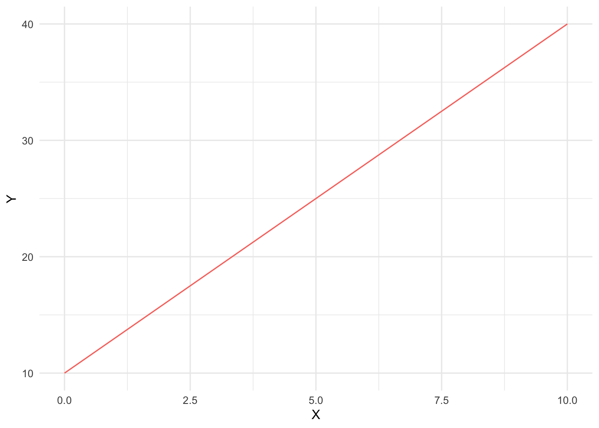

#count from 1 to 10 in increments of 0.5
count = base::seq(from = 1, to = 10, by = 0.5)
print(count) [1] 1.0 1.5 2.0 2.5 3.0 3.5 4.0 4.5 5.0 5.5 6.0 6.5 7.0 7.5 8.0
[16] 8.5 9.0 9.5 10.0#count from 1 to 10 in increments of 0.5
count = base::seq(from = 1, to = 10, by = 0.5)
print(count) [1] 1.0 1.5 2.0 2.5 3.0 3.5 4.0 4.5 5.0 5.5 6.0 6.5 7.0 7.5 8.0
[16] 8.5 9.0 9.5 10.0#define function to calculate Y from a linear equation
compute_Y = function(X, a, b){
Y = a*X + b
return(Y)
}
#define values
X = 5
b = 10
a = 3
#apply function
result = compute_Y(X, a, b)
print(result)[1] 25#check algebra
#Y = 3*5 + 10
#Y = 15 + 10
#Y = 25#define values
a = 3
b = 10
X = base::seq(from = 0, to = 10, by = 1)
#create df
df = data.frame(
a = a,
b = b,
X = c(X),
Y = compute_Y(X, a, b)
)
print(df) a b X Y
1 3 10 0 10
2 3 10 1 13
3 3 10 2 16
4 3 10 3 19
5 3 10 4 22
6 3 10 5 25
7 3 10 6 28
8 3 10 7 31
9 3 10 8 34
10 3 10 9 37
11 3 10 10 40#plot results from part c
plot_1 = ggplot(data = df, aes(X, Y))+
geom_line(aes(X, Y, color = 'coral'))+
theme_minimal()+
theme(legend.position = 'none')
plot_1
#define 3 functions
F1 = function(X, a1, b1){
Y = a1*X + b1
return(Y)
}
F2 = function(X, a2, b2){
Y = a2*X + b2
return(Y)
}
F3 = function(X, a1, b1, a2, b2){
F1_result = F1(X, a1, b1)
F2_result = F2(X, a2, b2)
Z = F1_result - F2_result
return(Z)
}
#define values
a1 = -2
b1 = 100
a2 = 3
b2 = 0
#find the intersection of the two curves
X_star = pracma::fzero(fun = F3, x = c(-100, 100), a1 = a1, b1 = b1, a2 = a2, b2 = b2)[[1]]
#an alternative way to use the fzero function:
#X_star = pracma::fzero(function(x) F3(x, a1=a1, b1=b1, a2= a2, b2 = b2), 10)[[1]]
Y_star = F1(X = X_star, a1 = a1, b1 = b1)
results = paste0("X* = " , X_star , ", Y* = " , Y_star)
print(results)[1] "X* = 20, Y* = 60"#check algebra for part e answer
#calculate X*
#F1 = F2
#-2X + 100 = 3x + 0
#5X = 100
#X = 20
#calculate Y*
#F1 = -2*20 + 100
#F1 = -40 + 100
#F1 = 60
#F2 = 3X
#F2 = 3*20
#F2 = 60P = credits per jar of peanut butter
Q = jars of peanut butter
Demand Curve: \[P_{demand} = 400 - 0.05Q\]
Supply Curve: \[P_{supply} = 20 + 0.05Q\]
The equilibrium price of peanut butter would be 210 credits/ jar and the equilibrium quantity would be 3800 jars of peanut butter.
To solve for the equilibrium Q, set the demand curve equal to the supply curve and solve. \[P_{demand} = P_{supply}\] \[400 - 0.05Q = 20 + 0.05Q\] \[400 - 20 = 0.05Q + 0.05Q\] \[0.1Q = 380\] \[Q* = 3800\] To solve for the equilibrium P, plug the equilibrium Q into either the supply or demand curve and solve. Here, we plug the equilibrium Q into the demand curve. \[P = 400 - 0.05(3800)\] \[P = 400 - 190\] \[P* = 210\] To measure the benefit of the new market to food banks that buy peanut butter, we could calculate the consumer surplus (CS). To do so, we would subtract the price the food bank buyers pay for peanut butter from their total willingness to pay for peanut butter. Similarly, to measure the benefit of the new market to food banks that sell peanut butter, we could calculate the producer surplus (PS). To do so, we subtract the total variable costs of supplying that peanut butter from the total revenue those producers make.
We could also measure the benefit of the new market to food banks that buy peanut butter by looking at the difference in the price they are able to buy peanut butter in the new market against the price they would have paid for peanut butter in the traditional market. Similarly, we could measure the benefit of the new market to food banks that sell peanut butter by looking at the difference in the price they are able to sell peanut butter in the new market against the price they are able to sell peanut butter in the traditional market. We would need to decide how the value of a credit is related to the value of a traditional dollars to do these comparisons and make sure to compare the same quantity/ amount of peanut butter.
If each jar of peanut butter that is transacted imposes an externality that is equivalent to 50 credits, this should change the amount of trade by food banks. To account for this externality, the food bank market could be changed by adding a tax to each peanut butter jar transaction of 50 credits per jar. This would act as an incentive to reduce the amount of trade, which would limit the total externality cost.
The new equilibrium price would be 235 credits per jar and the new equilibrium quantity would be 3300 jars of peanut butter.
New Supply Curve: \[P_{supply-new} = 20 + 0.05Q + 50\] \[P_{supply-new} = 70 + 0.05Q\] The demand curve would remain unchanged.
Demand Curve: \[P_{demand} = 400 - 0.05Q\]
To calculate the new equilibrium Q, we set the demand curve equal to the new supply curve and solve for Q. \[P_{demand} = P_{supply-new}\] \[400 - 0.05Q = 70 + 0.05Q\] \[400 - 70 = 0.1Q\] \[0.1Q = 330\] \[Q* = 3300\] To calculate the new equilibrium P, we plug in the new equilibrium Q into either the demand curve or the new supply curve. Below, we plug the new equilibrium Q into the demand curve to solve for the new equilibrium P. \[P = 400 - 0.05Q\] \[P = 400 - 0.05(3300)\] \[P = 400 - 165\] \[P* = 235\]
P = $/car
Q = quantity of cars
Supply Curve: \[P_{supply}= 120 + 0.3Q^{1.3}\] Part 3a i
Approximately 465 cars will be sold back to the state of California under the “cash for clunkers” program if a $1000 subsidy is offered for inefficient old cars.
#define functions
supply_compute_P = function(Q){
P = 120 + 0.3*Q^(1.3)
return(P)
}
supply_compute_Q = function(P){
Q = ((P - 120)/0.3)^(1/1.3)
return(Q)
}
#apply functions
P = 1000
Q_star = supply_compute_Q(P)
results = paste0("When the price for an inefficient car is $1000, the equilibrium quantity, Q*, is " , Q_star, ".")
print(results)[1] "When the price for an inefficient car is $1000, the equilibrium quantity, Q*, is 464.730408417734."Part 3a ii
The elasticity of the supply curve of inefficient old cars priced at $1000/ car is approximately 0.87, meaning that the the quantity of cars supplied will only increase by 0.87% for every 1% increase in price. Since the suppliers are barely reactive to changes in price, the supply curve is considered inelastic at this point in the curve.
supply_elasticity = function(P0){
P1 = P0 + 1
Q0 = supply_compute_Q(P0)
Q1 = supply_compute_Q(P1)
Es = ((Q1 - Q0)/Q0)/((P1 - P0)/P0)
return(Es)
}
elasticity_result = supply_elasticity(1000)
results = paste0("The elasticity of supply of inefficient old cars is " , elasticity_result, ".")
print(results)[1] "The elasticity of supply of inefficient old cars is 0.87401131311887."Part 3a iii
The owners of old cars benefit because they own an object that the program values at $1000 and can profit by selling their cars to the program. An old and inefficient car may not be worth as much in the traditional market, so these old car owners would benefit from the program’s buyback policy. The old car owners, as well as the collective public, also benefit from the shared environmental and health benefits that result when fewer old cars are on the roads polluting.
Part 3a iv
The program and the subsidies offered are paid for by government funds, which is a cost to taxpayers. The taxpayers therefore lose out on the taxes they paid, but they also benefit from the shared environmental and health benefits of reduced pollutants in the environment.
Demand Curve \[P_{demand} = MB = 1500 - 0.4Q^{1.2}\] If the marginal benefit of removing old cars (environmental, health, etc.) is given by the equation above, then the socially optimal number of cars to remove is approximately 624 cars and the socially optimal subsidy to offer is approximately $1410.
#define functions
#demand curve
demand_compute_P = function(Q){
P = 1500 - 0.04*(Q^(1.2))
return(P)
}
compute_difference_P = function(Q){
Z = supply_compute_P(Q) - demand_compute_P(Q)
return(Z)
}
#apply functions
Q_star_result = pracma::fzero(fun = compute_difference_P, x = c(0, 10000))[[1]]
print(Q_star_result)[1] 623.5703P_star_result = demand_compute_P(Q_star_result)
P_star_result [1] 1409.651results = paste0("The socially optimal number of cars to remove, Q*, is " , Q_star_result , ", and the optimal subsidy, P*, is " , P_star_result, ".")
print(results)[1] "The socially optimal number of cars to remove, Q*, is 623.57025393584, and the optimal subsidy, P*, is 1409.65118532221."